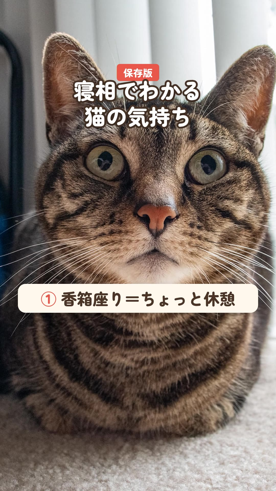

保存版寝相でわかる猫の気持ち
2026-10-25・Instagramで公開
へそ天で寝てくれたら、信頼されている証拠と言われています。あとで見返せるように保存しておくと便利です。
※この動画は CC BY-SA 4.0 で公開しています

素材: beltz6（CC BY 2.0／Flickr）、Dennis S. Hurd（CC BY 2.0／Flickr）、Kurayba（CC BY-SA 2.0／Flickr）
2026-10-25・Instagramで公開
へそ天で寝てくれたら、信頼されている証拠と言われています。あとで見返せるように保存しておくと便利です。
※この動画は CC BY-SA 4.0 で公開しています

素材: beltz6（CC BY 2.0／Flickr）、Dennis S. Hurd（CC BY 2.0／Flickr）、Kurayba（CC BY-SA 2.0／Flickr）